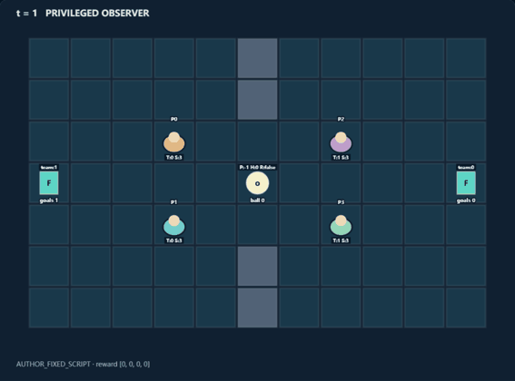
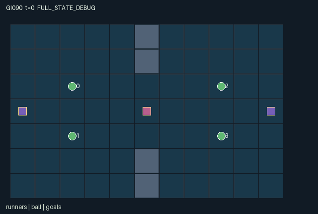

GI090 / SPATIAL
四拍接力球
传球沿真实格点飞行，可被接住、拦截或抢断；持球时限与体力限制队友配合。
Original saved demonstration
Recorded native state, often authored scripts or interventions; information scope and failures are preserved in the original provenance. This is a saved demonstration, not live browser play.

Release verification episode
Untrained uniform legal actions. Actual JAX state sampled along the full original episode; full-state debug camera. No human performance or learning claim.

Run this game
crucibles play --game 90
Start Python locally, then open the address printed by the terminal. Installation, multiplayer, takeover and keyboard controls →
Objective, rewards & ending
Exact task contract
{
"objective": "Two teams of two compete to carry the ball into their own far goal after a teammate has caught a pass during the current possession.",
"natural_termination": "The first relay-qualified goal ends the episode. The scoring team's two roles receive +1 each and the other team -1 each; all other rewards are zero. Otherwise the episode truncates at step 128.",
"interaction": "Real one-cell ball flight can be intercepted; adjacent opposing tackles transfer possession. Passing changes the receiver's scoring opportunity. Body occupancy, stamina, brace timing and a four-step hold limit change partner and opponent routes.",
"observation_access": "Every actual game variable affecting transition is public or a fixed known constant. All entities and the entire map are visible to every role. Observations contain the full public physical state and own role identity; no renderer-only policy information."
}Declared per-step reward bounds: -1 to 1. Observability: fully_observable.
Rules
- Roles 0 and 1 form team 0; roles 2 and 3 form team 1. A goal requires a completed teammate pass during the current possession.
- Movement costs one stamina; wait and brace restore one up to four. Old occupied cells and conflicting destinations block movement.
- A cardinal pass flies one cell per later step, up to four cells. Any runner on its current cell catches it; opponents erase relay eligibility.
- An adjacent tackle spends two stamina. A bracing holder with positive previous stamina resists; possession held for four further owner steps spills.
- The first qualified goal ends play. Natural completion takes priority at the horizon; the raw terminal state is absorbing.
Original mechanism document (historical status wording retained)
# Relayline: The Four-Tick Ball
Status: **AUTHORED_NOT_EXECUTED**. Candidate `game-v3-00090`, attempt 00; train-only prospective source. A/O/U/H = 4/126/8/128. Source SHA256: `af94258741acd76dc181234a66519f6f40e7961555b369e484b0b98ba30cf989`.
Original two-versus-two court with a physical one-cell projectile, possession-dependent relay eligibility and a short possession clock. No upstream game rules, layouts, implementation or heldout evidence were copied.
## Literal rules and transition order
1. Roles 0/1 attack the goal at (10,3); roles 2/3 attack (0,3). The midfield stones at x=5, y=0,1,5,6 make the three central rows the only crossing band. All positions determine movement, tackling, catches and scoring.
2. Each action is an attempt. Out-of-range action IDs become wait. Every in-range action is legal while live; unmet spatial/resource conditions cause no effect. At joint termination only action 0 is legal. All roles remain active together.
3. Movement proposals are clipped to the court. Stones, another role's previous position, or a duplicated proposed destination block movement. Swaps and same-step following into vacated cells are intentionally blocked.
4. After movement, existing free-ball flight advances one cardinal cell. Stones or a boundary stop flight. A runner on the resulting ball cell catches it. A same-team catch by a role other than the sender grants relay_ready; an opponent catch or successful tackle removes it.
5. Tackling is resolved after catches, and spends two stamina even when it fails. The nearest adjacency test uses actual post-move positions. Multiple eligible roles are ordered by the clock-rotated role rank. Bracing blocks tackles only with positive pre-step stamina.
6. The holder can launch toward its unique teammate only if cardinally aligned and one to four cells away. Passing spends one stamina, leaves the ball at the launch cell for this frame, and starts travel on the next step. The target direction is frozen; a receiver who moves away can miss the ball.
7. Hold starts at zero on a new owner and rises while that owner retains possession. At four it spills unless a pass launches on that step. Brace can buy tactical protection but cannot hold forever. A spilled ball remains at its real last holder position and loses relay eligibility.
## Cross-agent consequences and untested paired interventions
- Holding role 1 fixed on the pass endpoint, changing role 0 from wait to pass changes role 1's later possession and scoring eligibility. Moving role 1 off that endpoint instead changes the future ball location/owner.
- An opponent who waits versus tackles next to an unguarded holder changes possession, both teams' scoring opportunity and the eventual zero-sum terminal payoff; a simultaneous brace can reverse that opportunity.
- An off-ball runner occupying a corridor cell prevents another role from entering it, including a teammate. Waiting restores a future movement/pass budget but advances the holder's spill clock.
These are consequences derived from source inspection and proposed intervention traces. No paired-action execution or strategic-richness acceptance has been performed by the author.
## Partner-dependent strategies and possible variation
Plausible unmeasured strategies include leapfrog relays with receivers moving ahead before the launch, safe short passes around a defender, screening by position, and timed tackle/brace exchanges. Always waiting spills possession; repeated solo rushing cannot create relay eligibility. Passing early reduces spill risk but exposes a predictable flight line.
Future separately authorized variations could alter the court band, stamina budget, hold limit, pass range or team orientation, changing spacing and defense. None of those variants is implemented here, and no non-isomorphism, learning or generalization result is claimed.
## Information, rendering and invariants
Every actual game variable affecting transition is public or a fixed known constant. All entities and the entire map are visible to every role. Observations contain the full public physical state and own role identity; no renderer-only policy information.
The scene contains no executable rendering code. Its world, entity groups, attribute labels, event semantics, actions and observation labels are copied from this package's own manifest declarations. Visible positions bind directly to state arrays used in transitions. Inactive delivered objects are hidden as declared; the privileged debug state must be labelled separately from each role view. Events are last-transition flags, not cumulative event counts. The absorbing terminal keeps the final flags frozen; a repeated terminal call is not a newly occurring game event.
Positions stay within x=0..10,y=0..6; stamina 0..4; owner/source -1..3; team -1..1; flight 0..4; hold 0..3 in returned live states. Agent positions are unique. Rewards are -1,0,+1. Observation bounds are [-1,1].
All integer state fields use int32, all logical leaves bool, and returned observations/rewards float32. No key is duplicated in state. This particular source is deterministic and does not use the supplied stochastic key. Normalization uses powers of two. These are design and source properties, not an eager/JIT parity receipt.
## Terminal and integration contract
A live input increments scalar int32 t exactly once. Natural completion takes priority on the horizon: truncated is (next_t >= H) AND NOT terminated. episode_done equals terminated OR truncated. A terminal input returns the identical state/observation/clock, zero rewards, all dones true and the preserved natural/truncated cause. There is no reset inside raw_step. A trusted outer wrapper owns reset. Native learning receives only observe(state) and legal_actions(state).
The kernel is the homogeneous array boundary. A community JaxMARL dictionary adapter with per-agent dictionaries and __all__ is a separate coordinator-owned integration layer; its existence or correctness is not asserted by this source package. Completed individual deliveries do not remove a role from the joint action interface.
## Source line evidence
`candidate.py`, lines 12-16 (original_world):
```python
# EVIDENCE: original_world
board = jnp.zeros((7, 11), dtype=jnp.int32)
board = board.at[jnp.array([0, 1, 5, 6]), 5].set(1)
state = {
"t": jnp.array(0, dtype=jnp.int32),
```
`candidate.py`, lines 46-50 (action_attempts):
```python
# EVIDENCE: action_attempts
live = jnp.ones((4, 8), dtype=jnp.bool_)
resting = jnp.broadcast_to(jnp.arange(8)[None, :] == 0, (4, 8))
return jnp.where(state["episode_done"], resting, live)
```
`candidate.py`, lines 52-56 (public_observation):
```python
# EVIDENCE: public_observation
public = jnp.concatenate((
state["agent_pos"].reshape(-1).astype(jnp.float32) / 16.0,
state["stamina"].astype(jnp.float32) / 4.0,
state["team"].astype(jnp.float32),
```
`candidate.py`, lines 81-85 (movement_and_fatigue):
```python
# EVIDENCE: movement_and_fatigue
target = jnp.clip(old + delta[a], jnp.array([0, 0]), jnp.array([10, 6]))
moving = (a >= 1) & (a <= 4) & (state["stamina"] > 0)
target = jnp.where(moving[:, None], target, old)
wall = state["map"][target[:, 1], target[:, 0]] == 1
```
`candidate.py`, lines 94-98 (real_ball_flight_and_interception):
```python
# EVIDENCE: real_ball_flight_and_interception
owner = state["ball_owner"][0]
ball = state["ball_pos"][0]
velocity = state["ball_velocity"][0]
left = state["flight_left"][0]
```
`candidate.py`, lines 131-135 (teammate_pass_and_hold_limit):
```python
# EVIDENCE: teammate_pass_and_hold_limit
holder = jnp.clip(owner, 0, 3)
teammate = jnp.array([1, 0, 3, 2], dtype=jnp.int32)[holder]
difference = pos[teammate] - pos[holder]
distance = jnp.sum(jnp.abs(difference))
```
`candidate.py`, lines 157-161 (natural_priority_absorbing_terminal):
```python
# EVIDENCE: natural_priority_absorbing_terminal
n = dict(state)
n["t"] = state["t"] + 1
n["agent_pos"] = pos
n["stamina"] = stamina
```
## Supplied community references and originality
- [JaxMARL_README.md](https://github.com/bold-lab-ai/JaxMARL/blob/main/README.md) — Read supplied Quick Start/API text: parallel agent-keyed dictionaries and __all__ are an external adapter target; no upstream environment source or layout copied. Supplied-file SHA256: `6649d04f5ed05d620e78e8416a00d4db841cf2633ae60fdb3c9729e037a71c15`.
- [Pgx_README.md](https://github.com/sotetsuk/pgx/blob/main/README.md) — Read supplied Usage/API v2 text: JAX-native state transitions, explicit legal masks and caller-provided stochastic keys. No board rules, implementation or rendering copied. Supplied-file SHA256: `153f44999e55d5df3e51e13dee6ef418cc9704ddfa26206f1dc5789b9cbbf8df`.
- [Craftax_README.md](https://github.com/MichaelTMatthews/Craftax/blob/main/README.md) — Read supplied description, Basic Usage and reset discussion for spatial resource consequences and environment/algorithm separation. No game mechanics implementation, assets or layout copied. Supplied-file SHA256: `7f9757a2047143cf183f7e2e84851a740f386af80dbee050c89b316d66a3d3ff`.
- [PureJaxRL_README.md](https://github.com/luchris429/purejaxrl/blob/main/README.md) — Read supplied Code Philosophy and overview: single-file end-to-end JAX learning implementations are algorithm references, not a new game library. No learning code imported, copied or run. Supplied-file SHA256: `d5f40182c924a42cec820931e61a7d5070e48c4c8413c7d16455abc6ea0ef6b0`.
Only the supplied static README copies were consulted. The supplied Craftax PPO recurrent baseline was not read or used. Craftax is the game/mechanics reference; Pgx is a discrete-game API reference; PureJaxRL and the unconsulted PPO baseline are algorithm/integration references. No upstream code, benchmark layout, heldout implementation, project result, prior candidate, model call or network request was used. Common interface and terminal code here implements the supplied author contract, not an imported environment.
## Playthrough limits
`playthrough.json` is a fixed, in-range joint-action script with a reset seed. Every in-range attempt is legal while live. A replay driver must stop on done_all; only wait is legal afterward. Objectives and events in that file are intended hypotheses, not observations. The script is not a policy, solvability proof or success certificate. Candidate imports, reset/step calls, validators, JIT/vmap, training and rendering were not executed by this author. Root independently accepts or rejects the entire sealed batch after delivery.
Commands
Roles & abilities
agent_0 Team Amber runner 0; teammate is role 1
agent_1 Team Amber runner 1; teammate is role 0
agent_2 Team Indigo runner 2; teammate is role 3
agent_3 Team Indigo runner 3; teammate is role 2
Observation permissions
Training receives only the original observation rows. Role cameras use declared visibility; debug cameras are explicitly marked. Local benchmark records log debug exposure and role takeover history.
Exact observation layout
[
{
"slice": [
0,
4
],
"meaning": "Identity one-hot in role order 0,1,2,3",
"visibility": "self"
},
{
"slice": [
4,
12
],
"meaning": "All runner positions flattened xy, divided by 16",
"visibility": "public"
},
{
"slice": [
12,
16
],
"meaning": "All stamina divided by 4",
"visibility": "public"
},
{
"slice": [
16,
20
],
"meaning": "Team labels for all runners",
"visibility": "public"
},
{
"slice": [
20,
24
],
"meaning": "Carrying flags for all runners",
"visibility": "public"
},
{
"slice": [
24,
26
],
"meaning": "Actual ball xy divided by 16",
"visibility": "public"
},
{
"slice": [
26,
27
],
"meaning": "Ball holder plus one divided by 4; zero means no holder",
"visibility": "public"
},
{
"slice": [
27,
29
],
"meaning": "Ball xy velocity in -1,0,1",
"visibility": "public"
},
{
"slice": [
29,
30
],
"meaning": "Remaining flight steps divided by 4",
"visibility": "public"
},
{
"slice": [
30,
31
],
"meaning": "Last ball team -1,0,1",
"visibility": "public"
},
{
"slice": [
31,
32
],
"meaning": "Relay-ready flag",
"visibility": "public"
},
{
"slice": [
32,
33
],
"meaning": "Owner hold clock divided by 4",
"visibility": "public"
},
{
"slice": [
33,
34
],
"meaning": "Pass source role plus one divided by 4",
"visibility": "public"
},
{
"slice": [
34,
38
],
"meaning": "Both goal positions xy divided by 16",
"visibility": "public"
},
{
"slice": [
38,
40
],
"meaning": "Goal team labels",
"visibility": "public"
},
{
"slice": [
40,
41
],
"meaning": "Episode clock divided by 128",
"visibility": "public"
},
{
"slice": [
41,
46
],
"meaning": "Last-step event flags: launch, catch, interception, spill, goal",
"visibility": "public"
},
{
"slice": [
46,
49
],
"meaning": "Joint done, natural termination, truncation",
"visibility": "public"
},
{
"slice": [
49,
126
],
"meaning": "Public map flattened row-major yx; zero court, one stone",
"visibility": "public"
}
]Entity visibility & attributes
[
{
"id": "runners",
"kind": "agent",
"count": 4,
"position": [
"agent_pos"
],
"active": [
"agent_active"
],
"visibility": [
"agent_visible"
],
"attributes": [
{
"state_path": [
"team"
],
"meaning": "Team 0 or 1",
"display": "category"
},
{
"state_path": [
"stamina"
],
"meaning": "Movement and pass budget, 0 to 4",
"display": "bar"
},
{
"state_path": [
"carrying"
],
"meaning": "Currently holds the actual ball",
"display": "flag"
}
]
},
{
"id": "ball",
"kind": "object",
"count": 1,
"position": [
"ball_pos"
],
"active": [
"ball_active"
],
"visibility": [
"ball_visible"
],
"attributes": [
{
"state_path": [
"ball_owner"
],
"meaning": "Holder role, -1 means loose or flying",
"display": "number"
},
{
"state_path": [
"ball_velocity"
],
"meaning": "One-cell flight direction in xy",
"display": "direction"
},
{
"state_path": [
"flight_left"
],
"meaning": "Remaining one-cell flight steps",
"display": "number"
},
{
"state_path": [
"ball_team"
],
"meaning": "Last possession team, -1 before pickup",
"display": "category"
},
{
"state_path": [
"relay_ready"
],
"meaning": "A teammate caught a pass in the current possession",
"display": "flag"
},
{
"state_path": [
"hold"
],
"meaning": "Consecutive owner steps before forced spill",
"display": "bar"
},
{
"state_path": [
"pass_from"
],
"meaning": "Source role of unresolved pass, -1 otherwise",
"display": "number"
}
]
},
{
"id": "goals",
"kind": "landmark",
"count": 2,
"position": [
"goal_pos"
],
"active": [
"goal_active"
],
"visibility": [
"goal_visible"
],
"attributes": [
{
"state_path": [
"goal_team"
],
"meaning": "Team permitted to score at this goal",
"display": "category"
}
]
}
]Actual verification & provenance
Per-game execution receipt
{
"game": "gi090",
"status": "PASS",
"verification_revision": 2,
"source_sha256": "af94258741acd76dc181234a66519f6f40e7961555b369e484b0b98ba30cf989",
"seed": 20261101,
"runtime": {
"jax": "0.4.38",
"numpy": "1.26.4",
"devices": [
"TFRT_CPU_0"
]
},
"dimensions": {
"num_agents": 4,
"observation_size": 126,
"num_actions": 8,
"max_steps": 128
},
"checks": {
"eager_reset": {
"status": "PASS",
"seconds": 1.040175437927246
},
"observation_spaces_legal_masks": {
"status": "PASS",
"seconds": 0.22314834594726562
},
"eager_step": {
"status": "PASS",
"seconds": 2.1540274620056152
},
"jit_reset": {
"status": "PASS",
"seconds": 0.06000113487243652
},
"jit_step": {
"status": "PASS",
"seconds": 0.625643253326416
},
"eager_jit_integer_parity_float_measurement": {
"status": "PASS",
"seconds": 0.0010004043579101562
},
"jit_vmap_reset": {
"status": "PASS",
"seconds": 0.11310434341430664
},
"jit_vmap_step": {
"status": "PASS",
"seconds": 0.6777968406677246
},
"outer_autoreset_api": {
"status": "PASS",
"seconds": 0.5395171642303467
},
"full_original_horizon_episode_and_render": {
"status": "PASS",
"seconds": 1.6247341632843018
}
},
"human_scores": null,
"browser_controls": "PENDING",
"failures": [],
"elapsed_seconds": 7.5481956005096436,
"float_parity_max_abs": 0.0,
"numerical_parity": "EXACT",
"raw_terminal_absorbing": "PASS",
"terminal_outer_reset": "PASS",
"episode_steps": 128,
"scripted_random_returns": [
0.0,
0.0,
0.0,
0.0
],
"terminal": true,
"demo_information": "FULL_STATE_DEBUG",
"demo_frames": 27,
"render_roles_checked": 4
}Chromium control verification
{
"game": "gi090",
"status": "PASS",
"human_scores": null,
"engineering": true,
"checks": [
"catalog_selected_and_real_native_reset",
"dom_queue_and_native_step",
"second_participant_ownership_and_native_joint_step",
"all_roles_individually_controllable_no_role_cap",
"explicit_debug_camera",
"release_to_pure_ai_without_reset"
],
"ui_sha256": "15b5861d23b3c42811865c954d5a988280bbfd21cf8e93754be2437a027158c5",
"seconds": 3.38628888130188
}Original identity and file hashes
{
"id": 90,
"key": "gi090",
"title": "四拍接力球",
"summary": "传球沿真实格点飞行，可被接住、拦截或抢断；持球时限与体力限制队友配合。",
"tags": [
"传球配合",
"团队对抗"
],
"family": "spatial",
"dimensions": {
"num_agents": 4,
"observation_size": 126,
"num_actions": 8,
"max_steps": 128
},
"source_sha256": "af94258741acd76dc181234a66519f6f40e7961555b369e484b0b98ba30cf989",
"manifest_sha256": "2a544eb2c7d193e7505954641caf5db9348ae71373776c513e639d462fb917b6",
"files": [
{
"file": "candidate.py",
"sha256": "af94258741acd76dc181234a66519f6f40e7961555b369e484b0b98ba30cf989",
"bytes": 9576,
"origin": "work/exp_2/game_incubator_v3/community_games222_225_visualization_root222_v1/native154_candidate/registry/v2/games/game-v3-00090/candidate.py"
},
{
"file": "manifest.json",
"sha256": "2a544eb2c7d193e7505954641caf5db9348ae71373776c513e639d462fb917b6",
"bytes": 12402,
"origin": "work/exp_2/game_incubator_v3/community_games222_225_visualization_root222_v1/native154_candidate/registry/v2/games/game-v3-00090/manifest.json"
},
{
"file": "scene.json",
"sha256": "a5fb647bc548135c63b49c9226d781aad424b4cf1046472093ed918d0a220c7f",
"bytes": 7353,
"origin": "work/exp_2/game_incubator_v3/community_games222_225_visualization_root222_v1/native154_candidate/registry/v2/games/game-v3-00090/scene.json"
},
{
"file": "mechanism.md",
"sha256": "e6691363875b9fc03b19bcc0530765ee5d8e0bbb1c76bbda0d727753674e01e0",
"bytes": 10841,
"origin": "work/exp_2/game_incubator_v3/sources/game-v3-00090/attempt_00/mechanism.md"
},
{
"file": "playthrough.json",
"sha256": "1ac336e7052f1a25bd74123d6a631e06ab163fee3ab7290f4371f5e61968dcbb",
"bytes": 1471,
"origin": "work/exp_2/game_incubator_v3/sources/game-v3-00090/attempt_00/playthrough.json"
}
],
"original_status": "NATIVE154_REFERENCE",
"original_saved_replay": true,
"release_validation": "PASS",
"human_scores": null,
"browser_validation": "PASS"
}